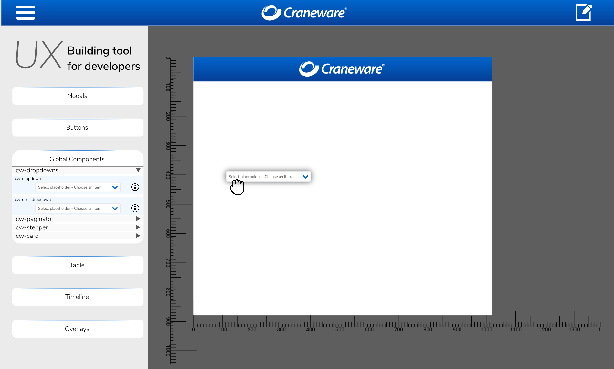

As the new platform is under one hood, every 'product team' is working on
the same repository, with varying
levels of experience in the framework and/or web-development in general.
This introduces an inconsistent code-base
and becomes quite apparent when the software that is being produced, is of a web-application that
involves design and user experience.
As mentioned earlier, the UX team is rather small and would require
a lot more resources to overlook every aspect in the development of the new look in each of these
seperate products.
It is crucial to keep the platform consistent and that it abides accessibility concerns, which is easy
to overlook for a web-developer.
The UX team came up with a solution to maintain the platform UI with consistent code and design elements.
A tool for developers to place all the global components and implementations as building blocks to generate the TypeScript, Template and Design files
for the pages under 1 module.
This tool would take care of the intricacies of setting up the tamplate and design, as those aspects most likely will differ
from engineer to engineer.
The tool would follow a grid-based approach and make use of the extensive global design choices made by UX, as well as give them the power to make changes to the overall design of the platform with little to none coding required.